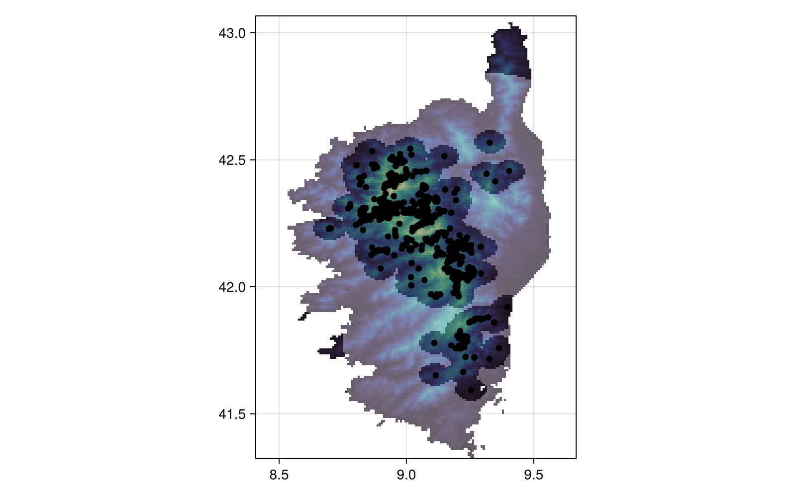
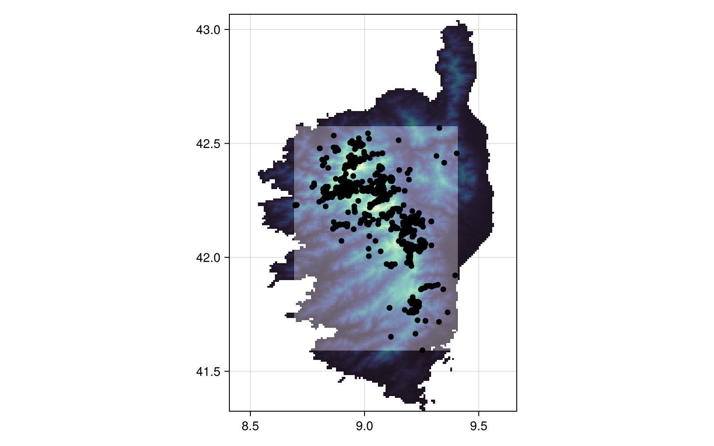
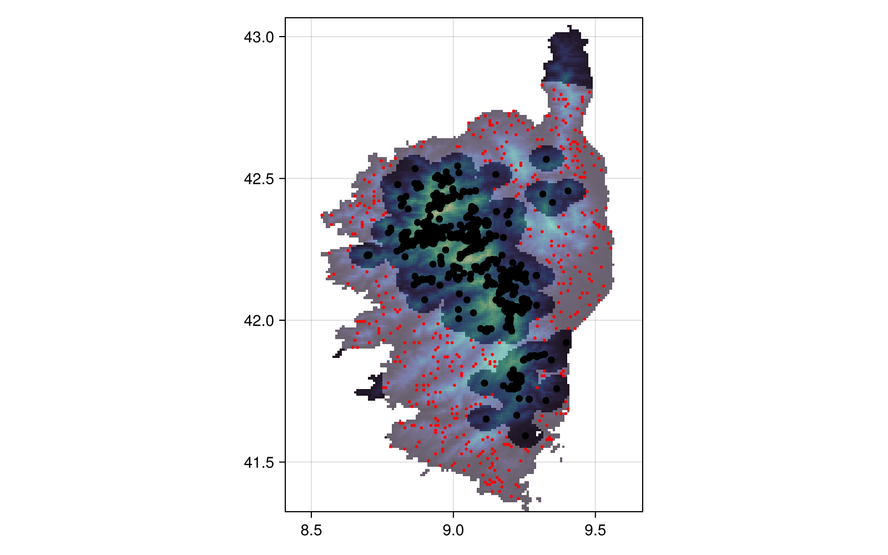

Generating background points
In this vignette, we will generate some background points (pseudo-absences) using the different algorithms present in the package.
using SpeciesDistributionToolkit
using CairoMakieIn order to work on a region that is not too big, we will define our spatial extent:
spatial_extent = (left = 8.412, bottom = 41.325, right = 9.662, top = 43.060)(left = 8.412, bottom = 41.325, right = 9.662, top = 43.06)Pseudo-absence generation requires occurrences super-imposed on a layer, so we will collect a few occurrences:
species = taxon("Sitta whiteheadi"; strict = false)
query = [
"occurrenceStatus" => "PRESENT",
"hasCoordinate" => true,
"decimalLatitude" => (spatial_extent.bottom, spatial_extent.top),
"decimalLongitude" => (spatial_extent.left, spatial_extent.right),
"limit" => 300,
]
presences = occurrences(species, query...)
for i in 1:3
occurrences!(presences)
endWe will get a single layer (temperature) from CHELSA1.
dataprovider = RasterData(CHELSA1, BioClim)
temperature = 0.1SDMLayer(dataprovider; layer = "BIO1", spatial_extent...)SDM Layer with 14432 Float64 cells
Proj string: +proj=longlat +datum=WGS84 +no_defs
Grid size: (209, 151)Pseudo-absences generations always starts by masking a layer by the observations. The output of this command is a layer with Boolean values, where the cells in which at least one occurrence is reported are true.
presencelayer = mask(temperature, presences)SDM Layer with 14432 Bool cells
Proj string: +proj=longlat +datum=WGS84 +no_defs
Grid size: (209, 151)We can for example generate a buffer for pseudo-absences in a radius of 30km around each point. Note that the WithinRadius method uses kilometers and not minutes of arc, so that the actual area is the same regardless of the latitude of the points. Note that the speed of the operation depends on the number of cells with an observation (linearly), and of the radius and raster resolution (to a power of 2). Internally, the code uses a variety of tricks to only look at cells that are susceptible to being pseudo-absences, but the WithinRadius method in particular can take a bit of time.
background = pseudoabsencemask(WithinRadius, presencelayer; distance = 30.0)SDM Layer with 14432 Bool cells
Proj string: +proj=longlat +datum=WGS84 +no_defs
Grid size: (209, 151)The pseudo-absence generation functions will return a mask, i.e. a boolean layer where the cells in which we can place a pseudo-absence are true, and the rest of the cells are false. This is useful for a variety of reasons, including adding more and more constraints to the locations of pseudo-absences. For example, we can decide that we do not want background points too close to the actual observations, and put a buffer around each.
buffer = pseudoabsencemask(WithinRadius, presencelayer; distance = 5.0)SDM Layer with 14432 Bool cells
Proj string: +proj=longlat +datum=WGS84 +no_defs
Grid size: (209, 151)We can now exclude the data that are in the buffer:
bgmask = (! buffer) & backgroundSDM Layer with 14432 Bool cells
Proj string: +proj=longlat +datum=WGS84 +no_defs
Grid size: (209, 151)Finally, we can plot the area in which we can put pseudo-absences as a shaded region over the layer, and plot all known occurrences as well:
heatmap(
temperature;
colormap = :deep,
axis = (; aspect = DataAspect()),
figure = (; resolution = (800, 500)),
)
heatmap!(bgmask; colormap = cgrad([:transparent, :white]; alpha = 0.3))
scatter!(presences; color = :black)
current_figure()┌ Warning: Found `resolution` in the theme when creating a `Scene`. The `resolution` keyword for `Scene`s and `Figure`s has been deprecated. Use `Figure(; size = ...` or `Scene(; size = ...)` instead, which better reflects that this is a unitless size and not a pixel resolution. The key could also come from `set_theme!` calls or related theming functions.
└ @ Makie ~/.julia/packages/Makie/WgbrE/src/scenes.jl:227
There are additional ways to produce pseudo-absences mask, notably the surface range envelope method, which uses the bounding box of observations to allow pseudo-absences:
sre = pseudoabsencemask(SurfaceRangeEnvelope, presencelayer)SDM Layer with 14432 Bool cells
Proj string: +proj=longlat +datum=WGS84 +no_defs
Grid size: (209, 151)heatmap(
temperature;
colormap = :deep,
axis = (; aspect = DataAspect()),
figure = (; resolution = (800, 500)),
)
heatmap!(sre; colormap = cgrad([:transparent, :white]; alpha = 0.3))
scatter!(presences; color = :black)
current_figure()┌ Warning: Found `resolution` in the theme when creating a `Scene`. The `resolution` keyword for `Scene`s and `Figure`s has been deprecated. Use `Figure(; size = ...` or `Scene(; size = ...)` instead, which better reflects that this is a unitless size and not a pixel resolution. The key could also come from `set_theme!` calls or related theming functions.
└ @ Makie ~/.julia/packages/Makie/WgbrE/src/scenes.jl:227
The RandomSelection method (not shown) uses the entire surface of the layer as a possible pseudo-absence location.
Note that we are not yet generating pseudo-absences, and in order to do so, we need to sample the mask generated by pseudoabsencemask. We can do so using backgroundpoints, which uses the StatsBase.sample function internally.
bgpoints = backgroundpoints(bgmask, sum(presencelayer))SDM Layer with 14432 Bool cells
Proj string: +proj=longlat +datum=WGS84 +no_defs
Grid size: (209, 151)And finally, we can make a plot:
heatmap(
temperature;
colormap = :deep,
axis = (; aspect = DataAspect()),
figure = (; resolution = (800, 500)),
)
heatmap!(bgmask; colormap = cgrad([:transparent, :white]; alpha = 0.3))
scatter!(presences; color = :black)
scatter!(bgpoints; color = :red, markersize = 4)
current_figure()┌ Warning: Found `resolution` in the theme when creating a `Scene`. The `resolution` keyword for `Scene`s and `Figure`s has been deprecated. Use `Figure(; size = ...` or `Scene(; size = ...)` instead, which better reflects that this is a unitless size and not a pixel resolution. The key could also come from `set_theme!` calls or related theming functions.
└ @ Makie ~/.julia/packages/Makie/WgbrE/src/scenes.jl:227